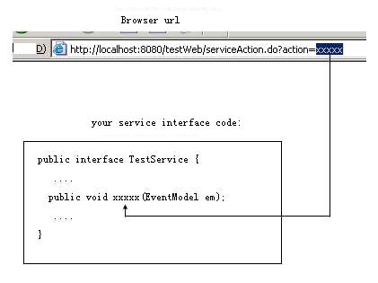

JDon.org
Command patern for calling services
This function is like the ActionController of Ruby on Rails， the function handles incoming requests from the user's browser and routes them to the correct method of a service class , not a controller class such as Struts's DispatchAction.

how to implements? three steps:
First step: configure your struts-config.xml:
<action path="/aaa" type="com.jdon.strutsutil.ForwardAction" name="aForm" scope="request"validate="false">
<forward name="xxxxx" path="/xxx.jsp"/>
</action> |
com.jdon.strutsutil.ForwardAction is the a class of jdon framework, xxxxx is your browser url parameter.
Second Step: tell jdon framework:you will call which service(the name of the JavaBeans) :
<model key="primary key of your model" class ="your model class">
<actionForm name="aForm"/>
<handler>
<service ref="testService" /> <!--the name of the JavaBeans-->
</handler>
</model>
<pojoService name="testService"
class="com.jdon.framework.test.service.TestServicePOJOImp"/>
|
Last Step: code your service interface:
public interface TestService{
……
void xxxxx(EventModel em);
……
}
|
|